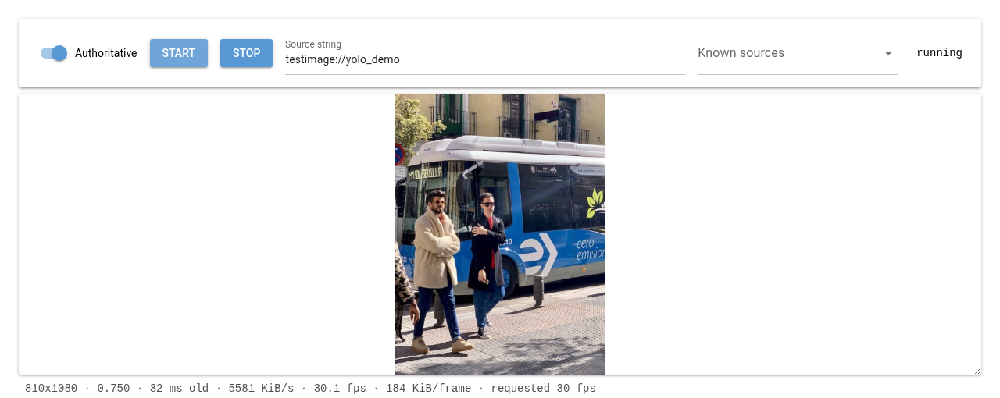
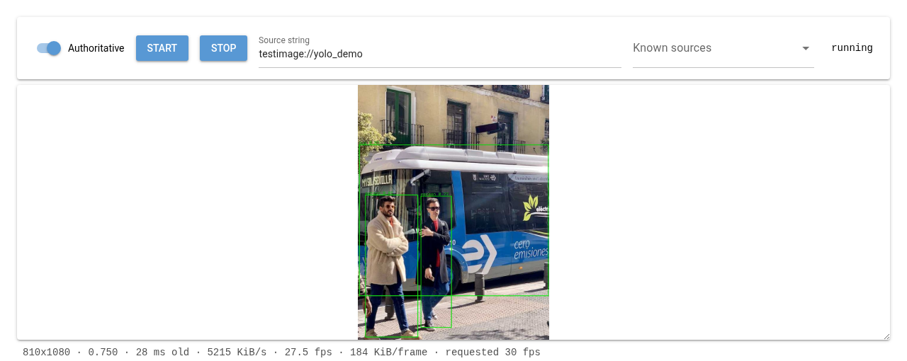

5. Tutorial: YOLO detection boxes as a live overlay¶
This walks through examples/yolo_overlay.py,
a standalone script that:
Attaches to an existing camera over SpiriSynq (a mirror — it never opens a device itself).
Runs YOLO object detection on each new frame.
Publishes the detected boxes as their own SpiriSynq object.
Publishes a
HudWidgetthat reads that object and draws the boxes as SVG rectangles, and attaches it to the camera so they show up composited on its picture.
It’s a separate process from the camera and from any UI — run it next to whatever is already serving the camera, point it at that camera’s topic, and stop it when you’re done; nothing about the camera or the overlay system needs to know it exists beforehand.
Install the one extra dependency this needs beyond SpiriCamera’s own, via
the examples extra:
uv sync --extra examples
(or pip install ultralytics directly, if you’re not using uv)
Then run it against a camera another process already has open:
python examples/yolo_overlay.py some-host/dev-video0
5.1. Running it against the NiceGUI debug UI¶
The debug UI (uv run python -m SpiriCamera.ui) is just another process
that owns or mirrors a camera — the detector script attaches to that
camera’s topic exactly like it would any other. The one piece of
information you need first is the topic, and the easiest way to get it
is to ask SpiriSynq the same question the UI’s own “Cameras on the
network” panel does:
python -c "
from SpiriSynq.session import current_session
for meta in current_session.get().list_topics(type_filter='Camera'):
print(meta['topic'])
"
This prints every camera currently advertising itself, including the
UI’s own — e.g. $(hostname)/spiricamera_testimage for the default
testimage:// source (the topic’s first segment is whatever machine
it’s running on). (The “Synq Topic” field shown in the UI’s Device card
is only the local half of this — spiricamera_testimage without the
hostname — so prefer the discovery one-liner over reading it off the
page.) If the UI is itself mirroring another camera rather than running
a device, this lists that camera’s topic instead — either way, whatever
the UI is currently showing frames from is what gets discovered here.
Then run the detector against it:
uv sync --extra examples # once, if you haven't already
python examples/yolo_overlay.py $(hostname)/spiricamera_testimage
Refresh the UI’s page (or hit the refresh icon on its overlay panel) and
the detection boxes should appear composited on the live picture within
a frame or two — no restart of the UI needed, since attaching the
overlay is done by editing overlay_widgets, a synced field the camera
picks up live.
Before the detector is running, the UI just shows the raw picture:

Once yolo_overlay.py is attached, green boxes appear around each
detection, composited directly into the frame the UI is already
displaying:

5.1.1. Seeing an actual box¶
The default testimage:// pattern is a color-bar test card — YOLO
correctly finds nothing in it, so detections.boxes will just stay
empty and no rectangles will appear. To see a real detection without
plugging in hardware, point the UI’s “Source string” field (or
SpiriCamera run testimage://yolo_demo on the CLI) at
testimage://yolo_demo instead: a real photo (borrowed from
ultralytics’s own sample assets, so it’s only available once the
examples extra is installed) panned slowly across frame, with people
and a bus for YOLO to actually find.
5.2. How it fits together¶
5.2.1. Getting frames without owning the device¶
from SpiriCamera import Camera
cam = Camera.from_topic(args.topic)
This is the mirror pattern described in Getting Started — no
device is opened locally, cam.image is kept up to date in the
background, and there is no read() to drive. The script runs a tight
loop, not a poll: there’s no sleep pacing it, it just runs detection
back-to-back as fast as model.predict allows, skipping a cycle only
when cam.image is the exact same object it already processed:
last_jpeg = None
while True:
jpeg = cam.image
if not jpeg or jpeg is last_jpeg:
continue
last_jpeg = jpeg
...
In practice a real source produces frames faster than YOLO can keep up,
so that identity check almost never fires — it only matters at startup
(before a first frame has arrived) or against a very slow source. This
is deliberately not event-driven: an earlier version connected to
cam.events.image and ran detection from that callback, but
cam.events.image fires on zenoh’s own callback thread, and psygnal
holds a lock for a signal’s entire emission — for as long as a connected
slot is running. Detection taking a few hundred milliseconds meant
cam.events.image.disconnect(), called from the main thread during
shutdown, blocked on that same lock until inference finished, and the
non-daemon zenoh thread underneath it couldn’t be joined until the
callback returned either — the process wouldn’t die on Ctrl-C. The
plain loop above sidesteps all of that: there’s no signal connection to
disconnect and no callback thread to wait on, so Ctrl-C stops it
immediately.
5.2.2. A note on overlays feeding back into detection¶
Attaching the widget to the mirrored cam (cam.overlay_widgets[...] = {}) bakes the boxes directly into cam.image server-side — see
read(), which composites overlays
before encoding unless overlay_client_render
is set. That means this same script’s next detection pass runs on a
frame that already has its own boxes drawn on it: the overlay it just
added is fed straight back into the thing deciding what to add.
Harmless here — YOLO doesn’t mistake a green rectangle for a person or
a bus, so it doesn’t compound — but it’s not the shape a real
deployment wants. There, the node that owns the camera and the node
that runs detection and publishes the overlay are two separate
processes, and the camera-owning one sets overlay_client_render = True
so overlays are only ever composited for display (in a browser, via
render_overlays_for_client())
and never baked into the frames anything downstream analyzes.
5.2.3. Publishing detections as a generic SpiriSynq object¶
The overlay system’s data sources aren’t camera-specific — any
SyncableObject with synced fields can be one (see
SpiriCamera.overlay’s module docstring for the mechanism, and
docs/architecture.md for why it’s built this way). So the detector
defines the smallest object that fits:
@dataclass
class Detections(SyncableObject):
boxes: list = field(default_factory=list)
detections = Detections(synq_topic="yolo-detector/detections", synq_authoritive=True)
...
detections.boxes = boxes # reassigning the field publishes it
Each entry in boxes is a plain dict — {"x", "y", "w", "h", "label", "score"}
in frame pixel coordinates. There’s no dedicated “list of boxes” field
type in SpiriSynq; a plain list field works because assigning it wholesale
is just a normal synced-field change like any other.
5.2.5. Colouring boxes by class¶
The template above draws every box the same colour. Telling classes
apart at a glance – people in one colour, vehicles in another – needs
nothing from Python or SpiriSynq, only more of the MiniJinja already in
the template: a {% set %} dict literal and a lookup inside the loop.
This is the step actually shipped in examples/yolo_overlay.py; it’s
broken out here because it’s a good worked example of MiniJinja doing
real logic, not just substitution:
{# object: det = yolo-detector/detections #}
{% set colors = {"person": "lime", "bus": "orange", "car": "deepskyblue"} %}
<svg ... viewBox="0 0 {{ frame.width }} {{ frame.height }}">
{% for box in objects.det.boxes %}
{% set color = colors[box.label] | default("yellow") %}
<rect x="{{ box.x }}" y="{{ box.y }}" width="{{ box.w }}" height="{{ box.h }}"
fill="none" stroke="{{ color }}" stroke-width="3"/>
{% endfor %}
</svg>
Two things worth noticing:
colorsis a plain template-local mapping, not a second declared object – there’s nothing about a class-to-colour scheme that’s live or worth publishing over SpiriSynq, so it’s just data baked into the template alongside the markup, exactly like a constant in any other language.colors[box.label]indexes that mapping with each box’s ownlabelfield. SinceSpiriCamera.overlayrenders templates with MiniJinja’s strict undefined behavior (see its module docstring), alabelthe map doesn’t have an entry for would otherwise fail the whole widget’s render for every box, not just the unrecognised one – one dropped bounding box shouldn’t blank out the rest. The| default("yellow")filter is what avoids that: it only replaces the specific lookup that came back undefined, falling back to a colour for any class the map doesn’t name.
5.2.6. Making the label readable on any background¶
A coloured label drawn straight onto the picture disappears the moment
it lands on a similarly-coloured or bright patch of frame – a lime
label over grass, say. The usual SVG fix is an outline: give the
<text> a stroke and set paint-order="stroke" so it’s drawn under
the fill. That doesn’t work here – thorvg’s SVG parser silently
ignores stroke, stroke-width, and paint-order on <text>
altogether (the same family of parser gap SpiriCamera.overlay
already documents for dy, see its module docstring). fill on
<text> does work, though, which is enough to fake an outline by
drawing the label several times, nudged a pixel in each diagonal
direction in black, then once more on top in the real colour:
{% set halo_offsets = [[-1,-1],[1,-1],[-1,1],[1,1]] %}
...
{% for dx, dy in halo_offsets %}
<text x="{{ label_x + dx }}" y="{{ label_y + dy }}" fill="black" font-size="16">
{{ box.label }} {{ box.score }}
</text>
{% endfor %}
<text x="{{ label_x }}" y="{{ label_y }}" fill="{{ color }}" font-size="16">
{{ box.label }} {{ box.score }}
</text>
halo_offsets is a list of two-element lists, unpacked with
{% for dx, dy in halo_offsets %} exactly like Python would. Deliberately
not a background chip behind the text (a filled or translucent <rect>,
the way camera_metrics_widget() does it)
– a halo keeps the label sitting directly on the picture with nothing
else added to it, at the cost of five text draws per box instead of one.
Either is a legitimate choice; which one reads better is a matter of
taste for a given overlay, not a limitation of one over the other.
The widget is published the same way the built-in
tiger_widget() example is, just from an
external process instead of from inside SpiriCamera:
widget = HudWidget(
synq_topic="yolo-detector/boxes_overlay",
synq_authoritive=True,
anchor="top_left",
svg_template=svg_template,
)
cam.overlay_widgets[widget.synq_absolute_path] = {}
That last line is what makes the mirrored cam actually render it —
overlay_widgets is a synced field itself, so this takes effect on the
camera’s very next frame, wherever that camera’s process is running, no
restart needed. Note the key is widget.synq_absolute_path, not the bare
synq_topic passed to the constructor — the widget’s base topic
prefix (e.g. a session’s default namespace) is folded in, and that’s the
value the camera looks up by.
5.3. How many lines is this, really¶
The whole script is about 60 lines of actual control flow (imports,
argument parsing, the detection loop, cleanup) plus a roughly 15-line SVG
template as a string constant — call it ~75 lines for a from-scratch,
independently-runnable detector. None of it is boilerplate specific to
this tutorial: the same shape — mirror a camera, define a small
SyncableObject, author a template that reads it — is how any external
process publishes any kind of overlay data, not just bounding boxes.
5.4. Cleaning up¶
The script publishes two objects (detections and widget) and closes
both, plus the mirrored cam, on Ctrl-C. Nothing it created outlives
the process — the camera stops rendering the overlay the moment the
HudWidget it was reading disappears from SpiriSynq.